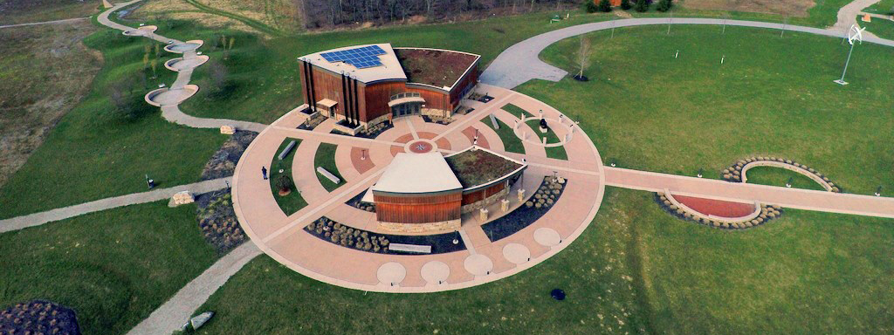

Observatory Park is a Dark Sky Park in Montville, Ohio.
The construction of DLITE Ohio has been made possible through a partnership with Observatory Park, part of the Geauga Park District in Ohio. Not only has Observatory Park allowed us to build our telescope and provide long-term housing for our instruments, but they have also provided countless hours of physical help with the building process. We especially wish to thank Chris Mentrek, without whom this project would not have happened.
Observatory Park will be the long-term home of DLITE Ohio, allowing us to continue to observe the ionosphere and the sun for years to come.
